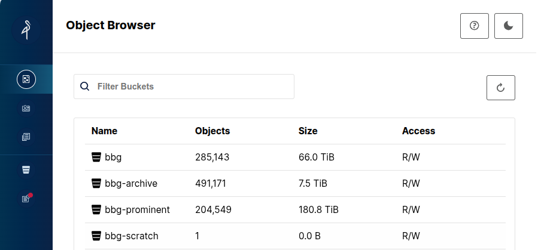
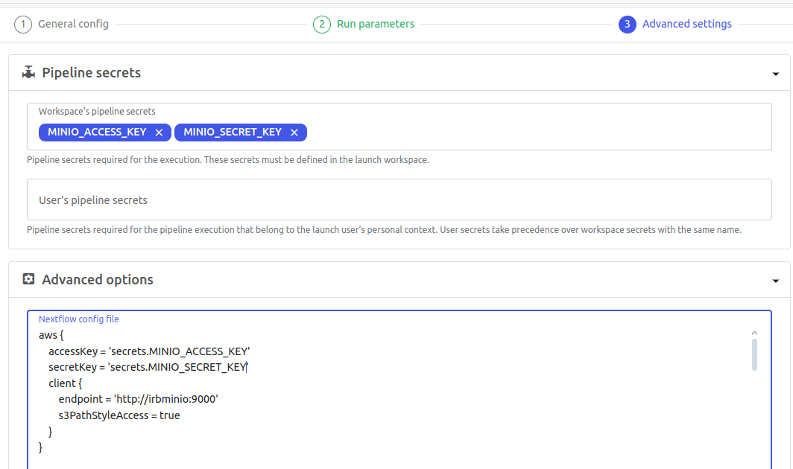

S3 storage¶
Table of Contents¶
What is a S3 Storage?¶
S3 (Simple Storage Service) is an object storage service. It stores data as objects inside buckets, rather than as files in directories. Each object consists of:
- Data (the file itself),
- Metadata (descriptive tags), and
- A unique key (the object's identifier within a bucket).
Unlike traditional file systems like our
standard partitions (NetApp), S3 is not a native POSIX
filesystem. It's not designed for direct file editing or low-latency access. While it can be mounted using tools
like rclone mount or s3fs, this is more of a workaround. It may not behave exactly like a regular shared folder.
Instead, most modern tools and workflows such as Nextflow, Snakemake, and Python libraries are increasingly adapted
to interact with S3 natively. This offers better performance and scalability for data-intensive pipelines.
S3 offers several advantages: it's scalable, ideal for storing large volumes of data (including hundreds of GB or more). It also supports fine-grained access control, and integrates well with cloud-native or container-based pipelines. In our case, S3 is used as static storage for raw data and final results, not as a working directory where files are constantly modified.
We use Minio, a local S3-compatible server (instead of AWS S3) to manage this storage on-premises.
How to access¶
Note
S3 only available from the new IRB cluster
By default, MinIO web access to S3 is available to all BBG members. It allows browsing buckets and downloading small files (e.g., metadata, images).
However, to access S3 from the terminal (e.g., to navigate, run Python scripts, or execute Nextflow pipelines outside Seqera), you need to generate S3 credentials.
If you only want to use S3 files in your Nextflow pipelines through seqera platform, no further setup is needed. Credentials are already configured in the pipelines; you only need to export them.
Minio Web¶
Using your LDAP credentials (the same user/password used for the cluster), log in at:
irbminio.irbbarcelona.pcb.ub.es:9001
Depending your project, you will see different buckets: 
Terminal¶
To use it via terminal, once in the IRB cluster:
# Load conda environment
$ ml load anaconda3/2023.09-0-yjzjr4h
$ module load anaconda3
$ conda activate s3-minio
# Generate credentials
# -r -> creates the ~/.config/rclone/rclone.conf file
# -d -> duration in days for credentials validity
$ python3 /apps/scripts/irb-storage-public-scripts/minio/minio-sts-credentials-request.py -u mgrau -r -d 365
# test
$ rclone lsf irb-minio://bbg
This script (minio-sts-credentials-request.py) generates the config file used by rclone:
$ cat ~/.config/rclone/rclone.conf
[irb-minio]
type = s3
provider = Minio
endpoint = http://irbminio.irbbarcelona.pcb.ub.es:9000
acl = bucket-owner-full-control
env_auth = false
access_key_id = ***
secret_access_key = ***
session_token = ***
If you want to use another S3 client, you need to create the credentials file. For example, for aws-cli (replace with your keys/token from the rclone.config):
$ cat ~/.aws/credentials
[default]
aws_access_key_id= **
aws_secret_access_key= **
aws_session_token= **
endpoint_url = http://irbminio.irbbarcelona.pcb.ub.es:9000
As mentioned earlier, you can mount an S3 bucket as a POSIX-like partition (similar to what McGyver does):
Warning
This allows you to browse S3 buckets as if they were part of the local file system, although it's typically read-only and it is not recommended for high-performance or heavy I/O use cases.
$ ls /home/mgrau/s3/bbg-scratch/
# Mount
$ rclone mount irb-minio:bbg-scratch /home/mgrau/s3/bbg-scratch --vfs-cache-mode off --read-only &
[1] 636085
$ ls /home/mgrau/s3/bbg-scratch/
work
# Unmount
$ fusermount -u /home/mgrau/s3/bbg-scratch
[1]+ Done rclone mount irb-minio:bbg-scratch /home/mgrau/s3/bbg-scratch --vfs-cache-mode off --read-only
$ ls /home/mgrau/s3/bbg-scratch/
$
How to use it¶
Seqera and Nextflow¶
As mentioned, you don’t need to include any credentials explicitly in Seqera to run a job. When accessing S3 data from a pipeline, remember to select the secrets and include the info in the config:

If using nextflow in a terminal, you can add the credentials to the nextflow.config
Python¶
To access an S3 file from a Python script, there are different libraries: boto3, s3fs and dask.
All three will automatically use the credentials in ~/.aws/credentials if it exists.
Note
AI recommends... Dask! Compared to s3fs and boto3, is much faster and optimized for parallel and distributed computing, enabling efficient processing of files hundreds of gigabytes in size. While boto3 is a low-level client and s3fs provides filesystem-like access, Dask builds on them to offer high-level, scalable data workflows that can handle massive datasets seamlessly.
boto3¶
import boto3
import pandas as pd
import botocore
# Initialize the S3 client
s3 = boto3.client('s3')
# Define your bucket and file key
bucket_name = 'bbg'
file_key = 'data/example/file.vcf'
# Read the file object directly, without downloading
response = s3.get_object(Bucket=bucket_name, Key=file_key)
content = response['Body'].read().decode('utf-8')
# Extract the data starting from the VCF header (#CHROM ...)
lines = content.strip().split('\n')
vcf_data = [line for line in lines if not line.startswith('##')] # Skip metadata
# Load the VCF data into a DataFrame
df = pd.read_csv(StringIO('\n'.join(vcf_data)), sep='\t', comment='#')
# Display the first few rows
print(df.head())
s3fs¶
import s3fs
import pandas as pd
# Initialize the S3 file system
fs = s3fs.S3FileSystem(client_kwargs={'endpoint_url': 'http://irbminio:9000'})
# Read the VCF file with proper handling
with fs.open("bbg/data/example/file.vcf", 'r') as f:
# Extract the data starting from the VCF header (#CHROM ...)
vcf_data = [line for line in f if not line.startswith('##')]
# Convert the data to a DataFrame
from io import StringIO
df = pd.read_csv(StringIO(''.join(vcf_data)), sep='\t', comment='#')
# Display the DataFrame
print(df.head())
dask¶
import dask.dataframe as dd
import s3fs
# Read the file using Dask (with appropriate filters)
df = dd.read_csv("s3://bbg/data/example/file.vcf",
sep='\t',
comment='#', # Ignore metadata lines starting with `##`
blocksize='16MB', # Adjust block size as needed
dtype='str') # Ensures flexible data type handling
# Display the first few rows
print(df.head())